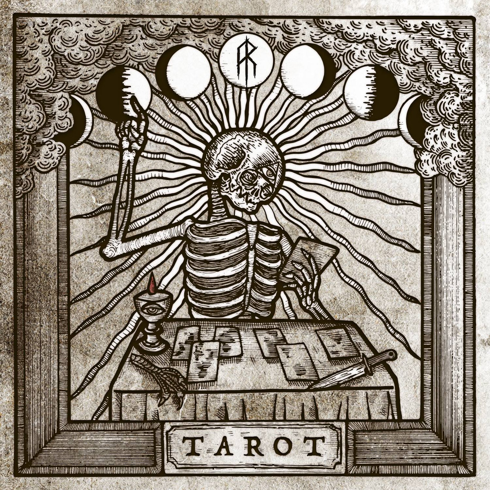
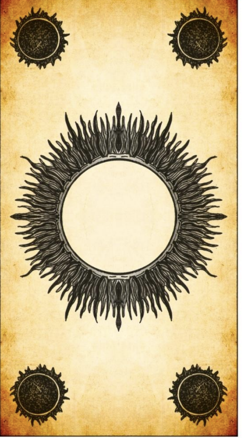

Tarot readings are a powerful form of divination that use an ancient deck of cards to help you find answers to your most important questions about love, relationships, your career, finances and more. Psychics and fortune tellers have used Tarot cards for hundreds of years, and Trusted Tarot will give you an accurate reading that's personalized based the cards you choose and the order you pick them. Every card has a different meaning depending on its position, so you will get a unique and detailed perspective on your current situation. To prepare for your reading, I recommend that you listen to this grounding excercise - then scroll down and select your cards.

Playing cards first entered Europe in the late 14th century, most likely from Mamluk Egypt, with suits of Batons or Polo sticks (commonly known as Wands by those practicing occult or divinatory tarot), Coins (commonly known as disks, or pentacles in occult or divinatory tarot), Swords, and Cups. These suits were very similar to modern tarot divination decks and are still used in traditional Italian, Spanish and Portuguese playing card decks. The first documented tarot packs were recorded between 1440 and 1450 in Milan, Ferrara, Florence and Bologna when additional trump cards with allegorical illustrations were added to the common four-suit pack. These new decks were called carte da trionfi, triumph cards, and the additional cards known simply as trionfi, which became "trumps" in English. The earliest documentation of trionfi is found in a written statement in the court records of Florence, in 1440, regarding the transfer of two decks to Sigismondo Pandolfo Malatesta. The oldest surviving tarot cards are the 15 or so Visconti-Sforza tarot decks painted in the mid-15th century for the rulers of the Duchy of Milan. A lost tarot-like pack was commissioned by Duke Filippo Maria Visconti and described by Martiano da Tortona probably between 1418 and 1425, since the painter he mentions, Michelino da Besozzo, returned to Milan in 1418, while Martiano himself died in 1425. He described a 60-card deck with 16 cards having images of the Greek gods and suits depicting four kinds of birds. The 16 cards were regarded as "trumps" since in 1449 Jacopo Antonio Marcello recalled that the now deceased duke had invented a novum quoddam et exquisitum triumphorum genus, or "a new and exquisite kind of triumphs".Other early decks that also showcased classical motifs include the Sola-Busca and Boiardo-Viti decks of the 1490s. In Florence, an expanded deck called Minchiate was used. This deck of 97 cards includes astrological symbols and the four elements, as well as traditional tarot motifs. Although a Dominican preacher inveighed against the evil inherent in cards (chiefly owing to their use in gambling) in a sermon in the 15th century, no routine condemnations of tarot were found during its early history. Because the earliest tarot cards were hand-painted, the number of the decks produced is thought to have been small. It was only after the invention of the printing press that mass production of cards became possible. The expansion of tarot outside of Italy, first to France and Switzerland, occurred during the Italian Wars. The most important tarot pattern used in these two countries was the Tarot of Marseilles of Milanese origin.
